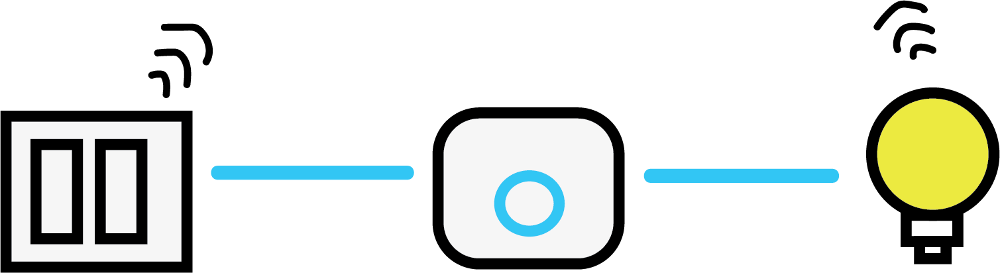
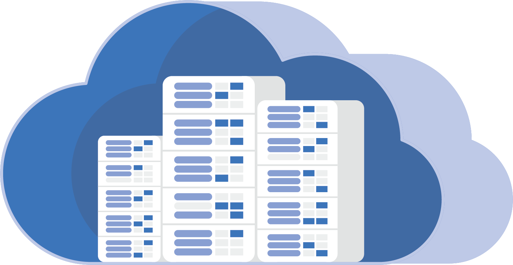

Top
ความหมาย
การที่อุปกรณ์ต่างๆ สิ่งต่างๆ
ได้ถูกเชื่อมโยงทุกสิ่ง ทุกอย่างสู่โลกอินเตอร์เน็ต
ทำให้มนุษย์สามารถสั่งการควบคุมการใช้งานอุปกรณ์ต่างๆ
ผ่านทางเครือข่ายอินเตอร์เน็ต โดยทั่วไป IoT
จะใช้เซนเซอร์หรืออุปกรณ์เฉพาะที่รองรับเทคโนโลยี IoT
เพื่อรวมข้อมูลและส่งข้อมูลไปยังระบบศูนย์กลาง
หรือคอมพิวเตอร์เซิร์ฟเวอร์ เพื่อให้ผู้ใช้งานสามารถเข้าถึงข้อมูลได้ทุกที่ทุกเวลาผ่านอินเทอร์เน็ต
โดย IoT มีประโยชน์ในหลายด้าน เช่น
การอัพเดทและควบคุมระบบ การติดตามและควบคุมอุปกรณ์ การเพิ่มประสิทธิภาพในการดำเนินงาน
และการจัดการข้อมูล ซึ่งทำให้ IoT เป็นเทคโนโลยีที่มีความสำคัญและน่าสนใจมากขึ้นในปัจจุบัน
จะเห็นได้ว่า IoT มีความสำคัญอย่างมากในช่วงสมัยปัจจุบัน
เนื่องจากมีศักย์สูงในการเชื่อมต่อและควบคุมอุปกรณ์ต่าง ๆ
รวมถึงการรวบรวมข้อมูลเพื่อนำไปใช้ในการตัดสินใจ การพัฒนาผลิตภัณฑ์
หรือการวิเคราะห์ข้อมูลเพื่อใช้ในการจัดการธุรกิจ เช่น ในการติดตามการขนส่งสินค้า
การควบคุมและตรวจสอบการใช้ไฟฟ้าและน้ำการติดตามสภาพอากาศและการเกษตร
การใช้งาน IoT สามารถนำมาใช้ในหลากหลายอุตสาหกรรมได้
เช่น อุตสาหกรรมการผลิต เพื่อให้สามารถติดตามและควบคุมกระบวนการผลิตได้อย่างรวดเร็วและมีประสิทธิภาพ
ในอุตสาหกรรมการขนส่ง เพื่อติดตามสินค้าได้อย่างแม่นยำและตรวจสอบการขนส่งได้รวดเร็ว
ในอุตสาหกรรมเกษตร เพื่อตรวจสอบสภาพแวดล้อม ความชื้นในดิน สภาพอากาศ และระบบน้ำ
เพื่อช่วยในการวางแผนการเกษตรและการดูแลพืชพื้นที่ได้อย่างมีประสิทธิภาพ
นอกจากนี้ IoT ยังมีการนำมาใช้ในการพัฒนาเมืองอัจฉริยะ (smart city)
เพื่อเพิ่มประสิทธิภาพและความสะดวกสบายในการใช้ชีวิตของมนุษย์ โดยการนำเทคโนโลยี IoT
มาปรับใช้ในการควบคุมและจัดการระบบการใช้งานพลังงาน
การจัดการการจราจรในเมือง การจัดการสิ่งแวดล้อม และการให้บริการสาธารณูปโภคต่างๆ
เพื่อให้เมืองก้าวสู่การเป็นเมืองอัจฉริยะอย่างยั่งยืน
ความสำคัญ
IoT (Internet of Things) เป็นเทคโนโลยีที่มีความสำคัญอย่างมากในยุคปัจจุบัน
เนื่องจาก IoT สามารถเชื่อมต่ออุปกรณ์ต่างๆ ในโลกดิจิทัลเข้ากับโลกที่เป็นพื้นที่ทางกายภาพได้อย่างมีประสิทธิภาพ
โดยที่ไม่ต้องมีคนมาเกี่ยวข้องกับการติดตั้งและควบคุมทุกอย่างด้วยตนเอง
นี่เป็นเหตุผลที่ IoT ถูกนำมาใช้ในหลายสาขาอุตสาหกรรมและธุรกิจต่างๆ
เช่น การผลิตอุตสาหกรรม, การขนส่ง, การเกษตร, การค้าปลีก, การบริการสุขภาพ, การศึกษา และอื่นๆ
ด้านการทำงาน
IoT สามารถนำมาใช้ในด้านการทำงานได้หลากหลาย
ตั้งแต่ การติดตาม และ ควบคุมกระบวนการผลิตในอุตสาหกรรม
การตรวจสอบสภาพแวดล้อมในการเกษตร
การติดตาม และ จัดการเครื่องจักรในสถานที่กว้างขวาง
และการดูแลความปลอดภัยในสถานที่ที่ต้องการควบคุมการเข้าออก
ตัวอย่างเช่นในอุตสาหกรรมการผลิต การนำเทคโนโลยี IoT มาใช้
จะช่วยให้สามารถติดตามกระบวนการผลิตได้อย่างรวดเร็วและมีประสิทธิภาพมากขึ้น
โดย IoT สามารถเชื่อมต่อกับเครื่องจักรและอุปกรณ์ต่างๆ
ในโรงงานเพื่อรวมข้อมูลและวิเคราะห์เพื่อปรับปรุงกระบวนการผลิตได้ตลอดเวลา
นอกจากนี้ IoT ยังช่วยลดความเสี่ยงของการเกิดซ้ำซ้อนในกระบวนการผลิต
และช่วยป้องกันความเสียหายที่อาจเกิดขึ้นในการผลิตด้วย
ในด้านการทำงานอื่นๆ เช่นในสถานที่กว้างขวาง
การนำเทคโนโลยี IoT มาใช้ในการติดตาม และ จัดการเครื่องจักรและอุปกรณ์ต่างๆ
จะช่วยลดความเสี่ยงที่อาจเกิดขึ้นจากการเสียหายของเครื่องจักรและอุปกรณ์
โดย IoT สามารถตรวจจับ และ แจ้งเตือนเมื่อเครื่องจักรหรืออุปกรณ์เกิดความผิดปกติหรือมีอาการเสียหาย
ด้านความปลอดภัย
ในด้านความปลอดภัย IoT สามารถนำมาใช้ในการเพิ่มประสิทธิภาพ
และความปลอดภัยในสถานที่ต่างๆ ได้ เช่นการตรวจจับและตรวจสอบ
การเข้าออกของบุคคลหรืออุปกรณ์ที่เชื่อมต่อกับระบบ IoT
โดยการใช้เทคโนโลยีเซ็นเซอร์และกล้องวงจรปิด
เพื่อตรวจสอบความถูกต้องและความเหมาะสมของบุคคลที่เข้ามาในพื้นที่
นอกจากนี้ IoT ยังช่วยให้สามารถตรวจจับอุบัติเหตุ
หรือการเกิดเหตุการณ์ที่เป็นอันตรายได้อย่างรวดเร็ว
และแจ้งเตือนผู้ดูแลระบบทันที เพื่อทำการแก้ไขปัญหาอย่างได้ผลและทันเวลา
อย่างไรก็ตาม การนำเทคโนโลยี IoT มาใช้ในด้านความปลอดภัย
ก็ต้องมีการคำนึงถึงความเป็นส่วนตัวและความปลอดภัยของข้อมูล
การรั่วไหลของข้อมูลส่วนบุคคลอาจเกิดขึ้นได้เมื่อมีการเชื่อมต่อกับอุปกรณ์
ที่ไม่ปลอดภัยหรือมีช่องโหว่ในระบบ ดังนั้นการออกแบบและการใช้งานระบบ IoT
ต้องมีการคำนึงถึงการรักษาความปลอดภัยของอุปกรณ์และข้อมูลอย่างเหมาะสม
โดยมีการใช้เทคโนโลยีการรักษาความปลอดภัยที่เหมาะสม เช่น การเข้ารหัสข้อมูล
และการใช้ระบบการตรวจจับการเข้าถึงแบบมีประสิทธิภาพ เช่น การใช้ระบบการพิสูจน์ตัวตนแบบความปลอดภัยสูง
เพื่อเข้าถึงระบบ IoT ได้เฉพาะบุคคลที่มีสิทธิ์เท่านั้น
นอกจากนี้ยังมีการสร้างระบบควบคุมและดูแลระบบ IoT อย่างต่อเนื่อง
เพื่อตรวจสอบการทำงานและการใช้งานของอุปกรณ์เป็นระยะเวลา
และพัฒนาระบบการประเมินความเสี่ยงและการแก้ไขปัญหาโดยรวดเร็ว
เพื่อรักษาความปลอดภัยของระบบ IoT ในทุกๆ
ด้านอย่างมีประสิทธิภาพและเหมาะสมกับการใช้งานในสถานที่ต่างๆ
อย่างเหมาะสมและมีประสิทธิภาพสูงสุด
ด้านการแพทย์
IoT ในด้านการแพทย์มีความสำคัญอย่างมาก
เนื่องจากสามารถช่วยเพิ่มประสิทธิภาพการดูแลรักษาผู้ป่วย
และเตรียมการดูแลทางการแพทย์ได้หลากหลาย
นอกจากนี้ยังช่วยลดต้นทุนในการดูแลและรักษาผู้ป่วยได้ด้วย
เช่น ในด้านการดูแลสุขภาพผู้สูงอายุ สามารถใช้เซ็นเซอร์ตรวจวัดค่าความดันโลหิต
ระดับน้ำตาลในเลือด หรือการตรวจจับการเคลื่อนไหวของผู้สูงอายุ
เพื่อจัดการดูแลให้เหมาะสม นอกจากนี้ยังมีการพัฒนาเครื่องมือช่วยการแพทย์ด้วย IoT
เช่น เครื่องช่วยการหายใจอัตโนมัติ รวมถึงระบบการวิเคราะห์ภาพทางการแพทย์
ด้วย AI ที่ใช้งานร่วมกับ IoT เพื่อช่วยวินิจฉัยโรคได้อย่างถูกต้องและรวดเร็วขึ้น
นอกจากนี้ IoT ยังช่วยให้การดูแลรักษาผู้ป่วย
ที่ต้องการการดูแลแบบสองช่องทาง (Telemedicine) ได้ง่ายขึ้น
โดยการใช้เทคโนโลยี IoT และการเชื่อมต่ออินเทอร์เน็ต
ผู้ป่วยสามารถรับการดูแลและการตรวจสอบอาการของตนเองได้ในบ้านหรือที่ทำงาน
และสามารถติดต่อแพทย์ผ่านระบบออนไลน์ได้โดยตรง ซึ่งช่วยประหยัดเวลาและค่าใช้จ่ายในการเดินทาง
IOT ในด้านการเกษตร
IoT ในด้านการเกษตรเป็นการนำเทคโนโลยี IoT
มาใช้ในการบริหารจัดการและพัฒนาระบบการเกษตรให้มีประสิทธิภาพมากขึ้น
โดยสามารถใช้เทคโนโลยีเซ็นเซอร์เพื่อตรวจวัดและเก็บข้อมูลเกี่ยวกับสภาพแวดล้อมและพื้นที่เพาะปลูก
เช่น อุณหภูมิ, ความชื้น, ระดับน้ำ, แสงสว่าง ฯลฯ
และส่งข้อมูลไปยังระบบคอมพิวเตอร์เพื่อวิเคราะห์และจัดการการเกษตรให้มีประสิทธิภาพต่อไป
การใช้ IoT ในการเกษตรยังช่วยลดความเสี่ยงในการเกิดภัยพิบัติเช่นฝนทิ้งช่วง, แผ่นดินไหว,
แล้ง โดยการใช้เซ็นเซอร์สำหรับตรวจวัดสภาพอากาศและสภาพดิน
และส่งข้อมูลเพื่อให้เกษตรกรสามารถปรับปรุงการจัดการแปลงปลูกให้เหมาะสมต่อสภาพอากาศและสภาพดินได้อย่างถูกต้อง
นอกจากนี้ IoT ยังช่วยให้เกษตรกรสามารถติดตามและจัดการการเจริญเติบโตของพืชได้อย่างสะดวกสบาย
โดยใช้เซ็นเซอร์สำหรับตรวจวัดการเจริญเติบโตของพืช เช่น ความสูง, การเจริญเติบโตของใบ ฯลฯ
และส่งข้อมูลไปยังระบบคอมพิวเตอร์เพื่อวิเคราะห์และตรวจวัดความชื้นในดินและระดับน้ำในบ่อ
ส่งข้อมูลไปยังระบบคอมพิวเตอร์เพื่อวิเคราะห์และตรวจสอบว่าพืชต้องการน้ำและปุ๋ยเพิ่มเติมหรือไม่
จึงช่วยประหยัดทรัพยากรและลดค่าใช้จ่ายในการเกษตรอย่างมีประสิทธิภาพ
โรงเรือนปลูกเมล่อน
โรงเรือนปลูกเมล่อนเป็นสิ่งที่สำคัญในการผลิตเมล่อนในปริมาณที่มากพอสมควร
โดยการใช้โรงเรือนปลูกเมล่อนจะช่วยป้องกันไม่ให้พืชได้รับผลกระทบจากสภาพอากาศ และ ศัตรูพืชได้โดยตรง
ทำให้ผลผลิตเมล่อนมีคุณภาพและปริมาณมากขึ้น
นอกจากนี้ โรงเรือนปลูกเมล่อนยังช่วยให้เกษตรกรสามารถควบคุมสภาพแวดล้อมในโรงเรือนได้แม่นยำ
เช่น อุณหภูมิ ความชื้น ระดับ CO2 เป็นต้น ทำให้การเจริญเติบโตของเมล่อนสมบูรณ์และได้ผลผลิตที่คุณภาพสูงมากยิ่งขึ้น
โรงเรือนปลูกเมล่อนยังเป็นการลดการใช้พลังงานและเนื้อที่ในการผลิตเมล่อน
เพราะสามารถปรับควบคุมสภาพแวดล้อมในโรงเรือนได้ด้วยเทคโนโลยี IoT
ทำให้เกษตรกรสามารถปรับปรุงกระบวนการผลิตเพื่อเพิ่มประสิทธิภาพและปริมาณผลผลิต
ได้อย่างมีประสิทธิภาพมากขึ้นด้วยการใช้เทคโนโลยี IoT ในการบริหารจัดการ และ ติดตาม
สภาพแวดล้อมในโรงเรือนปลูกเมล่อนอย่างมีประสิทธิภาพ
1.โรงเรือนปลูกเมล่อน
2.แผงโซล่าเซลล์รับแสง
3.ปั้มน้ำรับไฟจากแผงโซล่าเซลล์
4.มีเซ็นเซอร์ตรวจจับเพื่อหยดน้ำให้เมล่อน
ปรับลดอุณหภูมิภายในโรงเรือนให้ต่ำลงได้ 4 ถึง 8 °C เพื่อความสดใหม่
พร้อมเชื่อมต่อระบบเซ็นเซอร์วัดผล แบบไร้สาย เอาไว้ตรวจจับความชื้น อากาศ ค่าต่างๆ ที่ส่งผลต่อเมล่อน
สามารถวัดความชื้นในดินและระบบวาล์วน้ำไฟฟ้าแบบไร้สาย จะได้รู้ค่าความชื้นมากน้อยและสั่งการให้น้ำอัตโนมัติ
โดยเชื่อมต่ออุปกรณ์ควบคุมดูแล ผ่านแพลตฟอร์มฟาร์มอัจฉริยะ iFram
ทำให้สามารถควบคุมดูแลฟาร์ม ได้ผ่านสมาร์ทโฟนทุกที่ทุกเวลา
ได้ผลผลิตเพิ่มเป็น 2 เท่า และมีคุณภาพตามมาตราฐาน จากเดิมได้ผลผลิตไม่มาก
Smart Home
บ้านอัจฉริยะที่ใช้เทคโนโลยี IoT ในการควบคุมและควบคุมอุปกรณ์ต่าง ๆ ในบ้าน
ที่ช่วยให้ผู้ใช้สามารถควบคุมและตรวจสอบการทำงานของอุปกรณ์ต่าง ๆ
ได้อย่างสะดวกและรวดเร็ว โดยผู้ใช้สามารถควบคุมและควบคุมได้ผ่านอุปกรณ์อัจฉริยะ เช่น สมาร์ทโฟน แท็บเล็ต หรือคอมพิวเตอร์
ใช้ Solar cell เมื่อแสงตกกระทบกับสารกึ่งตัวนำจะถ่ายเทพลังงานให้อิเล็กตรอน และโครงสร้างของอะตอมที่สูญเสียอิเล็กตรอน ทำให้เกิดการเคลื่อนไหวซึ่ง อิเล็กตรอนจะเคลื่อนไหวไปที่ Front Electrode และโครงสร้างของอะตอมที่สูญเสียอิเล็กตรอนจะเคลื่อนไปรวมกันที่ Black Electrode เมื่อครบวงจรจะเกิดกระแสไฟฟ้า
Smart Switch รับไฟจากแผง Solar cell เชื่อมเข้ากับสัญญาณ Wi-Fi
Gateway เป็นตัวกลางที่เชื่อมระหว่าง App กับตัวอุปกรณ์ที่ไม่ใช้ Wi-Fi

Controller เป็นตัวควบคุมในส่วนของ Application สามารถควบคุม Switch ให้เปิด-ปิดได้ตลอดเวลา
Voice Controller สั่งการด้วยเสียงให้ เปิด-ปิด Switch ห้องต่างๆในบ้านได้อย่างง่ายดาย
ใช้งานยังไงให้ปลอดภัย
การใช้งาน IoT ที่ปลอดภัยเป็นสิ่งสำคัญอย่างมาก
เนื่องจาก IoT เป็นเทคโนโลยีที่มีการเชื่อมต่อกันระหว่างอุปกรณ์ต่าง ๆ
ที่มีการส่งข้อมูลผ่านเครือข่ายอินเตอร์เน็ต และถ้าไม่มีการรักษาความปลอดภัยอย่างเหมาะสม
อาจเกิดความเสี่ยงที่จะถูกแฮกหรือแก้ไขข้อมูลโดยไม่ได้รับอนุญาตป้องกันได้ดังนี้
เชื่อมต่ออินเทอร์เน็ตเมื่อจำเป็น
ทุกครั้งที่มีการเชื่อมต่ออินเทอร์เน็ตต้องมีประโยชน์
แยกวงเน็ตเวิร์คออกมาต่างหาก
แยกเป็น Guest Networking เพื่อไม่ให้ผู้ที่ไม่ได้รับอนุญาต
ตั้งรหัสผ่านให้ปลอดภัย
ไม่ว่าจะเป็นการตั้งรหัสผ่านที่ยาว
ปิดการใช้ UPnP
เป็นฟีเจอร์ที่ทำให้อุปกรณ์ต่าง ๆ เชื่อมต่อกันได้ง่าย
อัปเดตเฟิร์มแวร์สม่ำเสมอ
เฟิร์มแวร์และแพทช์ล่าสุดเป็นสิ่งที่ควรอัพเดท

ระวังการใช้ Cloud Services
การจะใช้ cloud ต้องเชื่อมต่ออินเทอร์เน็ตสู่ภายนอก
ไม่นำอุปกรณ์ส่วนตัวไปใช้ในที่ทำงาน
หลีกเลี่ยงการนำอุปกรณ์ IoT ส่วนตัวไปใช้ที่ทำงาน เนื่องจากอุปกรณ์เหล่านี้ยังมีประเด็นเรื่องความมั่นคงความปลอดภัยของทุกๆองค์กร
ติดตามตลอดเวลา
ถ้าเจออุปกรณ์ที่ไม่รู้จักให้ทำการ Block ทันที
Cloud
มีหน้าที่จัดเก็บข้อมูล หรือนำข้อมูลมานำเสนอในรูปแบบ App server
End nodes
เป็นสิ่งของและอุปกรณ์ตรวจจับ เช่น microcontroller,
Connectivity
ทำให้สิ่งของและอุปกรณ์ตรวจจับเชื่อมต่ออินเทอร์เน็ตได้
ช่วยเพิ่มประสิทธิภาพในการทำงาน
เพิ่มความแม่นยำสามารถเก็บข้อมูล
ไร้ข้อจำกัดด้านเวลาและสถานที่
ไม่มีปัญหาเรื่องเวลาและสถานที่ สามารถทำงานได้ทุกที่ทุกเวลา
ช่วยลดต้นทุน
ลดต้นทุนการจ้างพนักงาน ต้นทุนการผลิต
สะดวกสบาย
มีเทคโนโลยีมาทำงานแทนช่วยให้เราสะดวกในการทำจริงต่างๆมากขึ้น
ยกระดับกิจการให้ Smart ในสายตานักลงทุน
เพิ่มรายได้และขยายกิจการ เป็นที่น่าจับตามองของนักลงทุน
แบบทดสอบ
62080500210
นางสาวชนิตา พรหมอินทร์
62080500227
นายปริญญา ลพสถิตย์